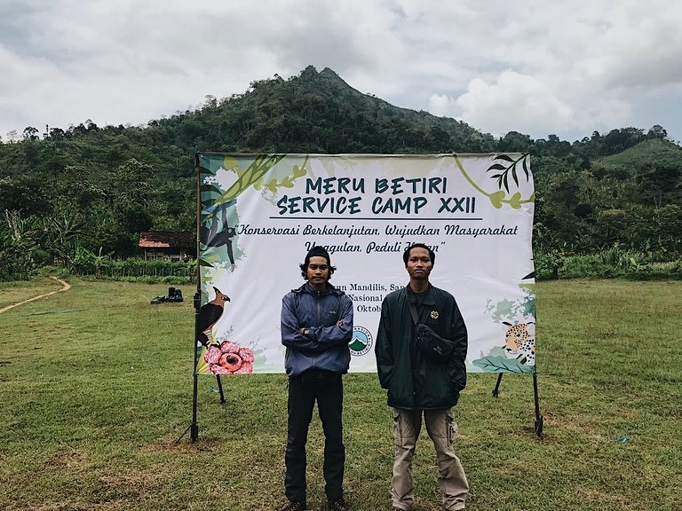

Review Acara: Meru Betiri Service Camp XXII

Kamis, 30 Desember 2021 20.00 WIB
Sanenrejo-Pada tanggal 7- 11 Oktober kemarin telah terselenggarakan Meru Betiri Service Camp XXII yang diadakan di dusun Mandalis, Sanerejo, Taman Nasional Meru Betiri. Acara yang dihadiri oleh 89 peserta dari beberapa organisasi dari seluruh JaWa Tengah tersebut mengambil tema mengenai konversi berkelanjutan wujubkan masyarakatunggulan peduli hutan. Salah satu organisasi yang berpartisipasi adalah Mapala USM 1988 dengan dihadiri oleh 2 peserta.
MBSC XXII tahun ini berisi kegiatan pembekalan materi seperti pengenalan TNI Meru Betiri, Kehutanan Umum, Ekologi Konservasi Sumber Daya Alam Ekosistem (KSDAE), Flora dan Fauna Taman Nasional Meru Betiri (TNMB), Karivor Besar, Analisis Air, Pengamatan Burung, Eko Wisata, Interpresentasi Alam dan kegiatan lainnya yang dilakukan dan dibagi selama 5 hari. Tujuan dari pembekalan materi tersebut agar peserta lebih peka terhadap fenomena yang ada saat ini dan mampu menyebarluaskan ke masyarkat arti konservasi dan peduli terhadap hutan. Setelah serangkaian pembekalan selesai, peserta akan diangkat menjadi kader konservasi tingkat pemula yang berada di bawah naungan Taman Nasional Meru Betiri.
Salah satu perwakilan Mapala USM 1988 mengatakan jika aacara tersebut sangat menarik dan menyadarkan dia bahwa kita harus peduli dengan lingkungan sekitar kita dan kita sebagai generasi penerus harus peduli dengan alam tersebut unutk generasi selanjutnya. Dia juga mengajak anggota Mapala USM 1988 untuk berpartisipasi dalam acara tersebut kedepannya.